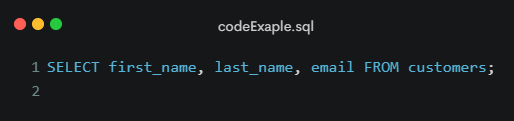

SQl and Databases
How databases are used to store and organize data for a website
SQL means structured querry language and used for Databases
SQL (Structured Query Language) is a programming language used to manage and manipulate data in relational databases
It is used to insert, update, retrieve and delete data in a database
SQL is the standard language for interacting with relational databases
SQL code Example
